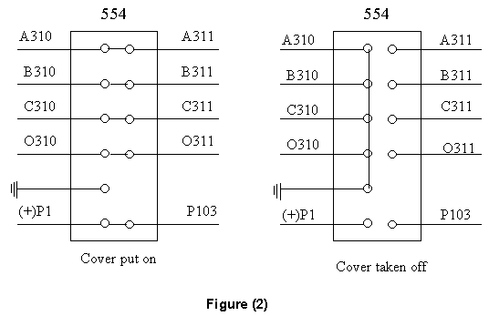
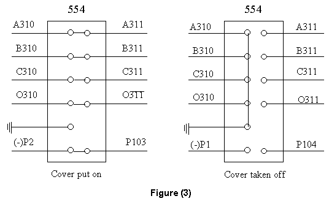
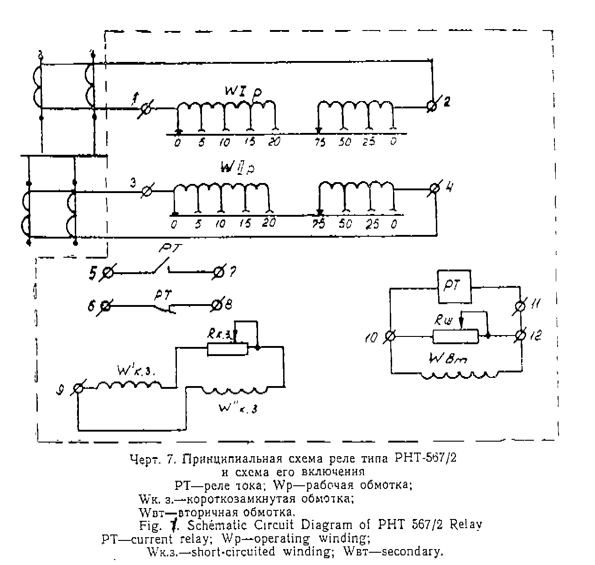
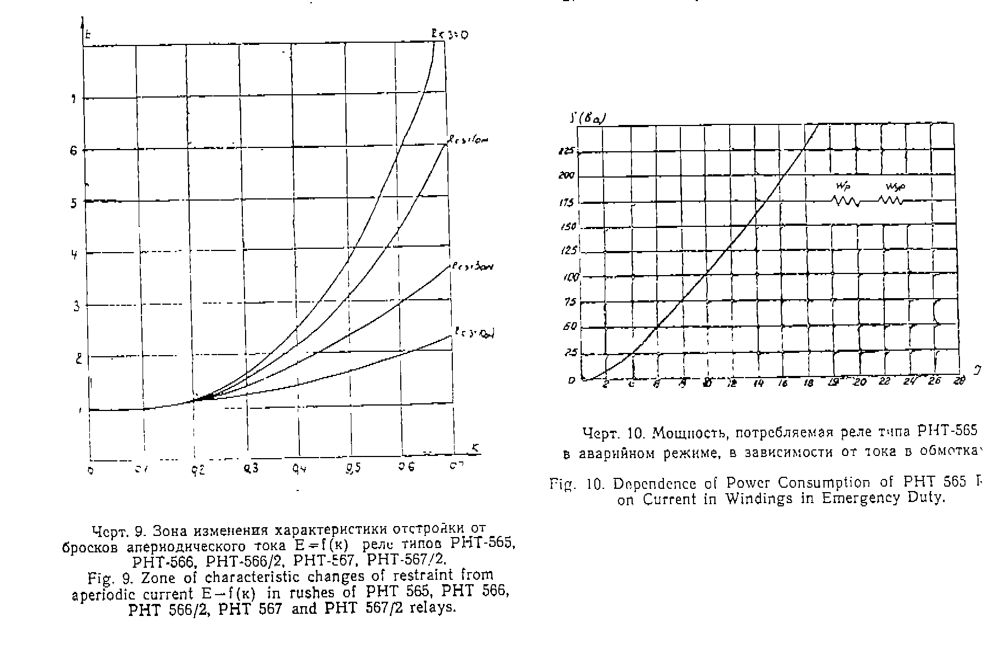

Protection Technical Procedure
Bus Bar Protection 132KV
PHT 567/2
Russia
Issued to: Networks
Testing Procedure(s)
|
|
Protection Technical Procedure |
|
| Equipment: Bus Bar Protection 132KV PHT 567/2 Russia |
Document No: BBP-006-r0 | |
|
Issued to: Networks |
||
| Status: APPROVED | ||
| Procedure: Testing Procedure(s) |
Approved Date: 6 Nov 2000 | |
| Date to be Reviewed: Nov 2005 | ||
Introduction
This procedure details the steps required to completely check the proper operation and calibration of the PHT567/2 bus bar differential) relay. It is recommended this procedure be carried out on a yearly bases. This work be carried out section of this document is divided into 3 sections.
The first preliminary steps to prepare for relay testing describes the activities required prior to testing. Some of these steps could be performed days before the actual test. The second section Preparation for testing describes the steps to set up the equipment for performing the actual tests. The third section is the actual test.
The document is formatted the way to minimize the possibility of error causing personal injury or damage to equipment.
The PHT 567/2 relay is used for differential protect of bus bars.
The differential relays of all type designations consist of a service element. The electromagnetic relay type PT 40, and a storable core transformer (HTT) the general view of the relays is shown in fig-1
Safety Precautions
A work permit must be issued and the maintenance staff should carry the suitable ID safety category,
Maintenance staff should be well trained, qualified or directly supervised by some one who is.
Safety fence with caution marks surrounding the work area is required.
Personal protective equipment must be used (safety shoes, safety helmet).
Tools and Equipment
Work to be Carried Out
Test Procedure for 132KV Bus Bar Protection
From the DC out put drawing determine the NC and name of strap which tipping for the bus bar 132 kV 1C & 2C and disconnect all strap from tripping to alarm position.
From complete diagram of DC circuit driver determine the name of straps and test block which make initiation circuit breaker failure (To diagram of 132kv. Backup device) for132kv bus bar 1C and 2C and isolate them.
From complete diagram of AC circuit drawing determine the No. of the test blocks for 132 kV bus bar protection 1C and 2C test blocks 554,654,754 and 854 cover taken off as in Fig 2 Fig 3. (for example)


Notes:
By putting out the cover of test blocks 5,6,7 and 854 this makes short on secondary circuit of current side CTS summation and opening the secondary circuits side protective relay device automatically by test block theory and also disconnection DC off circuits for bus bar protection.
At means that the bus bar protection 13 PHT to 24 PHT out of service from AC and DC
Testing PHT 567/2 (13 PHT => 24 PHT)
according to setting value which adjusting for every.
Technical Data and Design Setting (13 PHT)
|
Protected Side |
Transf. Ratio |
Current Transf. Connection |
Operation Current |
Resistance in short circuited windings |
Number of turns of windings and numbering of terminals |
|
|
132 KV |
750/1 |
Star |
3000 |
4 |
10 ohm |
25, 3 – 4 |
|
132 KV |
1500/1 |
Star |
3000 |
2 |
10 ohm |
50, 1 - 2 |
|
Protected Side |
Transf. Ratio |
Current Transf. Connection |
Operation Current |
Resistance in short circuited windings |
Number of turns of windings and numbering of terminals |
|
|
132 KV |
||||||
|
132 KV |
||||||
Connect the secondary current from test set to terminal 1–2 of the relay PHT 567/2 as shown in Fig 1.
Connect the contact 5 – 7 of the relay PHT to in sure the operation of the relay.
Switch on the test set unit to inject a. current.
Increase the AC current from zero to setting value which adjusting on the relay PHT 567/2 and Record the operation value “I operating” in test certificate.
The relay will operate and contact 5 – 7 must be closed.
Decrease the A.C current until the relay reset and record this value “I resetting “ in the test certificate.
Switch off the test set unit.
|
Terminal of coil 1- 2 |
PT 40 / p |
|||||
|
Number of turns |
I operating |
I reset Amp |
V operating on 10-11`V` |
I operating Amp |
I resetting Amp |
Resetting Ratio
K = I reset |
|
50 |
2 |
1.85 |
3.4 |
0.15 |
0.13 |
|
|
Terminal of coil 1- 2 |
PT 40 / p |
|||||
|
Number of turns |
I operating |
I reset Amp |
V operating on 10-11`V` |
I operating Amp |
I resetting Amp |
Resetting Ratio
K = I reset |
Repeat steps above from 5 –2 to 5 – 8 with change connection from
terminal 3 – 4 off the relay PHT567/2 as in fig 1.
|
Terminal of coil 3 – 4 |
PT 40 / P |
|||||
|
Number of turns |
I operating A mp |
I reset A mp |
V operating on 10-11 V |
I operating A |
I reset A |
Resetting Ratio
K = I reset |
|
25 |
4 |
3.38 |
3.4 |
0.15 |
0.13 |
|
|
Terminal of coil 3 – 4 |
PT 40 / P |
|||||
|
Number of turns |
I operating A mp |
I reset A mp |
V operating on 10-11 V |
I operating A |
I reset A |
Resetting Ratio
K = I reset |
Testing Certificate of
Differential Relay Type PHT 567/2
For The 132 kv 1C and 2C Bus Bar Protection
|
Relay |
Phase |
Terminal of coil 1-2 |
Terminal of coil 3-4 |
||||||
|
No of turns |
I op A |
I re A |
K |
No of turns |
I op A |
I res A |
K=
I res |
||
|
13 PHT 14 PHT 15 PHT 16 PHT 17 PHT 18 PHT 19 PHT 20 PHT 21 PHT 22 PHT 23 PHT 24 PHT |
A B C A B C A B C A B C |
50 50 50 50 50 50 25 25 25 95 95 95 |
2.1 2.1 2.1 2.1 2 2.05 4.1 4.2 4 1.1 1.12 1.08 |
1.9 1.9 1.85 1.85 1.9 1.85 3.6 3.8 3.8 0.88 0.9 0.9 |
0.9 0.9 0.88 0.88 0.95 0.9 0.88 0.9 0.95 0.8 0.8 0.83 |
25 25 25 25 25 25 25 25 25 95 95 95 |
4.15 4.05 4.1 4.1 3.9 4.1 4.1 4.15 4.1 1.12 1.15 1.15 |
3.7 3.6 3.7 3.7 3.5 3.55 3.7 3.65 3.4 0.86 0.9 095 |
0.89 0.88 0.9 0.9 0.89 0.86 0.9 0.88 0.83 0.78 0.78 0.82 |
|
Relay |
Phase |
Terminal of coil 1-2 |
Terminal of coil 3-4 |
||||||
|
No of turns |
I op A |
I re A |
K |
No of turns |
I op A |
I res A |
K=
I res |
||
|
13 PHT 14 PHT 15 PHT 16 PHT 17 PHT 18 PHT 19 PHT 20 PHT 21 PHT 22 PHT 23 PHT 24 PHT |
A B C A B C A B C A B C |
||||||||
Date: Checked by: ……………………………
Return Relay PHT 567/2 of the bus bar protection 132 KV 1C & 2C
and Associated Equipment to Service
Return relay to service by removing the test leads from the relay terminals and the test set
Insert the cover put on for test blocks 5,6 7,8 ,21 & 22 5u to the original position
Breakers failure (CBF) Back up device scheme a scooted with the relay
Breakers trip for all equipment straps puts position working
Make sure that the CT Secondary are in normal condition.

